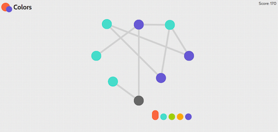
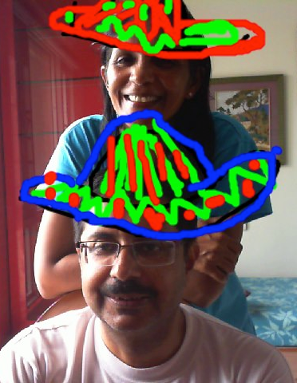

Nivedita Chopra
Projects
ScheduleCMU
ScheduleCMU is a schedule planning app designed for Carnegie Mellon
students to plan their course schedule from the convenience of their
computer or their smartphone.
I worked on ScheduleCMU as part of a team of 4 and this was our final project
for the class 15-237 Cross Platform Mobile Web Apps in Fall 2012. I mainly worked on the
back end of the project which involved a node.js server and a MongoDB database. I was also responsible
for designing and implementing the APIs that were used for communication of information
(class information and user schedules) between the back end and the front end of the project.
The project is live at www.schedulecmu.org.
Our code can be viewed on Github.

Colors
Colors is a browser game that is based on the idea of graph coloring.
I worked with Isaac Lim and
Madeline Horowitz to make it
during the PennApps hackathon in Fall 2013.
Players color the graph such that no two dots connected by a line have
the same color. Graphs are randomly generated and an extra node is added
upon advancing each level, making the levels increasingly complex. Each
level has a time limit of 30 seconds.
Scoring is based on the level number as well as on the number of colors
used in the coloring (lesser colors mean more points)
Do play it at colorsapp.herokuapp.com.
I should warn you that it's highly addictive!
You can also see our code on Github.

JPhotoBooth
JPhotoBooth
is a JavaScript based webcam tool.
It allows you to draw on your video feed and save snapshots of your drawing.
You can also upload the resulting pictures to Imgur and Facebook.
I worked on this with Tom Zhang and Austin Davis as a class project.
We built the tool using the getUserMedia API, jQuery and Sketch,js.
Flash is not required to use this tool.
Go ahead and use this to create funny pictures at
www.contrib.andrew.cmu.edu/~awdavis/jphotobooth/
